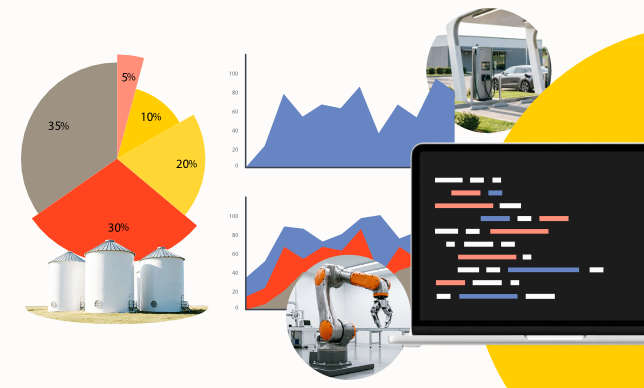
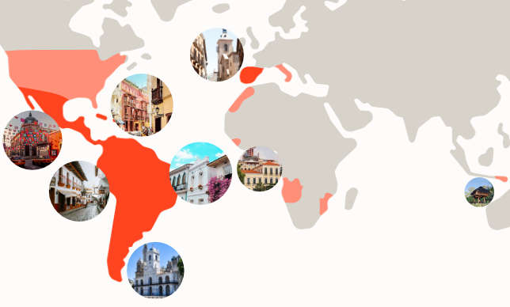
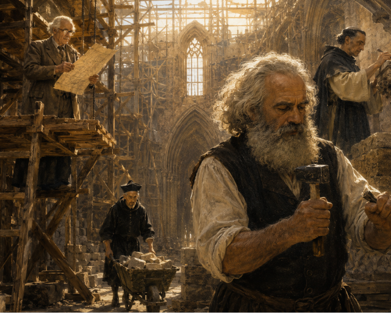
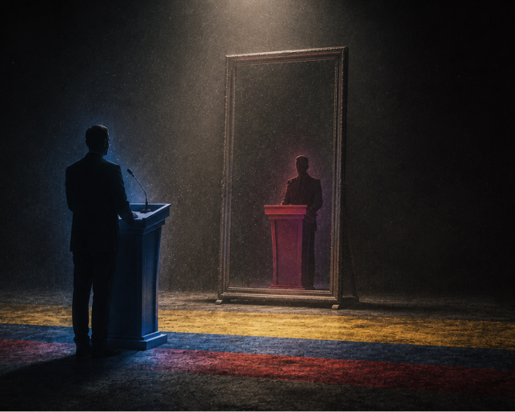

Vanguardia Colombiana
Nuestros objetivos
Los puntos básicos que guían nuestras ideas y nuestro proyecto político son:
-

Elevación de los trabajadores colombianos a la condición de clase nacional
Los trabajadores organizados hemos de controlar todas las capas y ramas del poder político; ser dueños y gestores del excedente de producción que nosotros mismos producimos.
-

La Iberofonía:
Una alianza estratégica geopolítica, económica y militar primeramente con los países de lo que fue la Gran Colombia…
-

Socialismo con características colombianas:
Se trata de un socialismo con características propias, netamente colombiano, compatible con la idiosincrasia de la inmensa mayoría de nuestro pueblo.
-

Centralismo democrático
Nos oponemos radicalmente a cualquiera que pretenda destruir la unidad nacional y a toda forma de fragmentación o balcanización.
-
Planificación económica pluralista mediante la tecnología cibernética
No tenemos pretensiones totalitarias, pero tampoco creemos en la religión del librecambismo ni en la anarquía de la producción.
-
Sobre los hombros de gigantes
Por todo lo dicho, el proyecto de Vanguardia Colombiana no es, como diría el marxista peruano José Carlos Mariátegui, “ni calco ni copia, sino creación heroica”.
La Materia Prima
-

¿Está Cuba vendiendo una nueva imagen al mundo?
Mientras muchos cubanos hacen filas por alimentos, el nieto de Raúl Castro exhibe un medallón de oro y dice que quisiera que todos vivieran como él…
-
Ontología del Materialismo Político
¿De qué está hecho el mundo? ¿Cuáles son los principios fundamentales que sostienen la realidad? Para el Materialismo Político, la materia, pero entendida como mucho más que aquello...
-

¿De qué hablamos cuando hablamos del Materialismo Político?
Ni idealismo, ni empirismo, ni verdad revelada. El Materialismo Político es un sistema filosófico en construcción que fusiona el...
-

Elecciones en Colombia: Entre el fraude y la ilusión democrática
El 31 de mayo, las elecciones colombianas dejaron en primera vuelta a Abelardo de la Espriella y a Iván Cepeda. Tomar partido por...

Únete a Vanguardia Colombiana
Si quieres unirte a Vanguardia Colombiana, debes leer nuestro decálogo político y estar de acuerdo con nuestros principios fundamentales. Si ya lo leíste, estás de acuerdo con nuestros fundamentos y quieres hacer parte de Vanguardia Colombiana, escríbenos a lavanguardiacolombiana@gmail.com para iniciar el proceso de afiliación. Agradecemos tu interés.